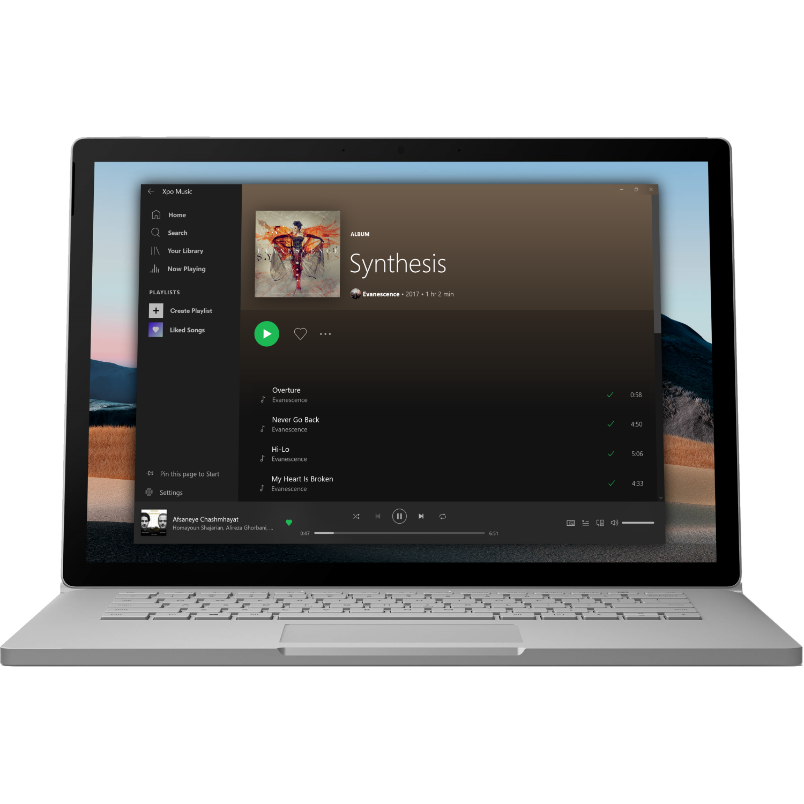

Modern
Xpo Music feels fast, beautiful and light, to give you a great experience browsing your music.

Customizable
Whether you like a gorgeous light theme or a cool and easier-on-the-eyes dark theme, Xpo Music has got you covered!


Integrated with Windows
Based on Spotify's own Web App, Xpo Music adds features like live tiles, mini view and taskbar integration, Xpo Music utilizes Windows 10 features for a better user experience.

Optimized for mouse and touch
Xpo Music UI works great on any Windows 10 powered PC, whether it's a tablet, laptop or a desktop PC.
Open source
Xpo Music is open source, and is a part of the UWP Community.